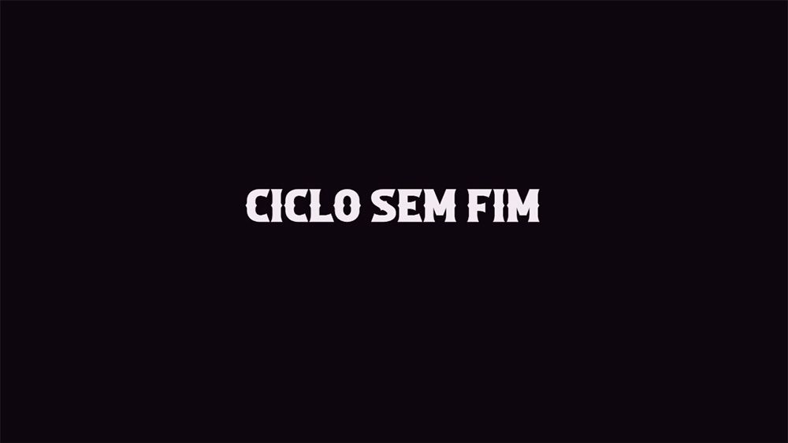

INICIO
1° SEMESTRE
2° SEMESTRE
3° SEMESTRE
VÍDEOS
It- A coisa – Realizar a recriação de alguma cena de filme, série e entre outras possibilidades em equipe.

Ciclo sem fim – Projeto realizado em grupo com o intuito de gravarmos um vídeo em que teria que haver uma abertura de porta.